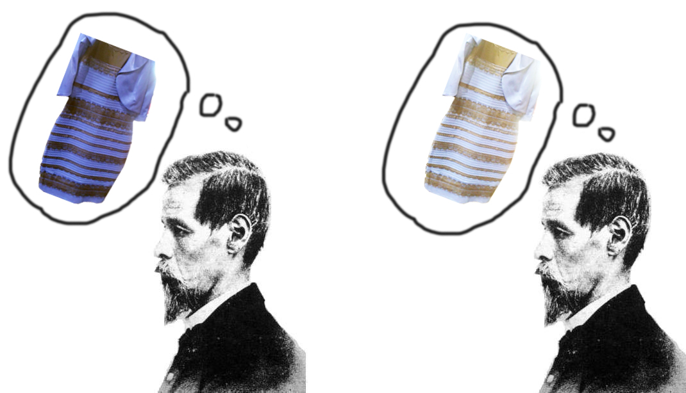
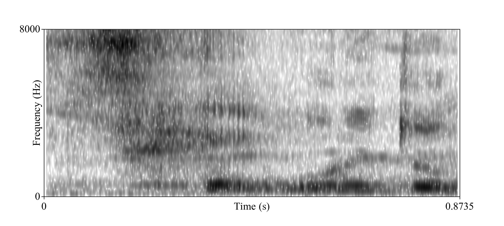
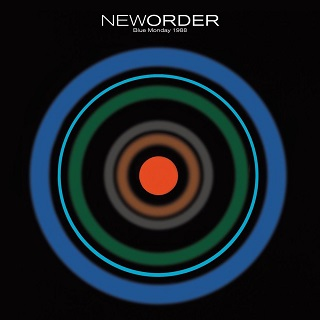
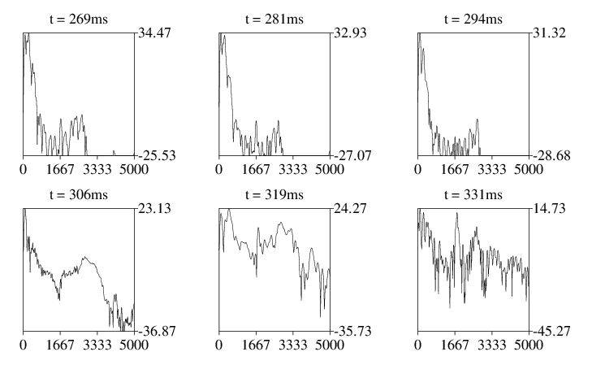
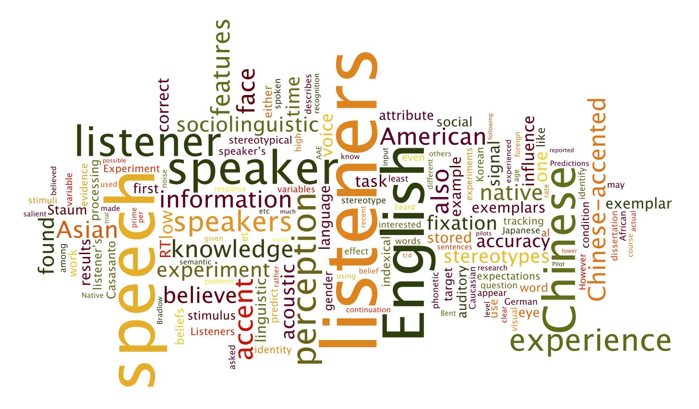
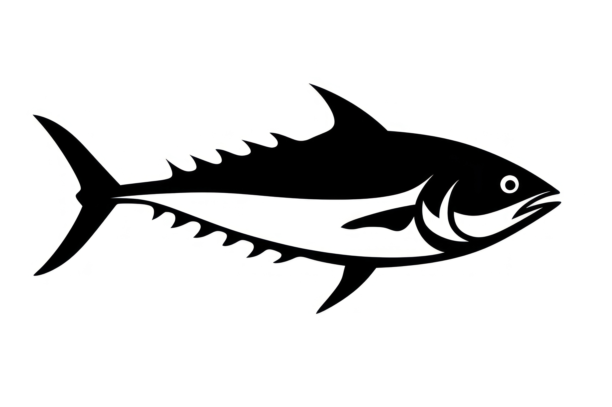

Kevin B. McGowan
home
research
teaching
stuff
cv
Categories
All
(18)
css linguistics
(1)
dissertation
(1)
information
(1)
latex phonetics teaching
(1)
macos
(1)
macos sucks
(1)
perl celex
(1)
phonetics speech perception mcgurk
(1)
poetry
(2)
praat airflow htk
(1)
praat phonetics
(1)
praat publishing phonetics
(1)
praat silly
(1)
praat textgrids
(1)
python data
(1)
recipes vegetarian
(2)
stuff
Useless
poetry
(A poem that is not about computers)
Open Source OCR on MacOS
macos sucks
MacOS Catalina (10.15) broke many things on my computer, but the one that has wasted the most of my time so far while I try to make old PDFs available to vision-impaired…
Apr 15, 2020
Our souls refracted through a mesh
poetry
Typishly has published my latest poem: Our souls refracted through a mesh. I’m thrilled to have it published and by the beautiful job they did with the presentation.
Sep 10, 2018

A child demonstrates the McGurk effect
phonetics speech perception mcgurk
A few years ago I made this video of my daughter demonstrating the McGurk Effect (McGurk and MacDonald 197). This effect is a demonstration of the importance of visual…
Mar 26, 2015

Generate publishable spectrograms with Praat
praat publishing phonetics
Publishers love this one wild trick!
Mar 24, 2015
Preprocess R data with python
python data
(for archival purposes only, probably don’t use this.)
Jul 11, 2014
match_tg_times.praat
praat textgrids
This script fixes a weird problem when concatenating TextGrids and sound objects. Often a TextGrid and its associated sound object will differ by anywhere from fraction of a…
Jul 10, 2014

New Order’s Blue Monday synthesized in Praat (sorta)
praat silly
Let’s say that you, like me, love New Order’s song
Blue Monday
. For some reason, let’s imagine that you have a computer and Praat but no access to your music collection…
Jun 16, 2013

repeatedFFT.praat
praat phonetics
This Praat editor script will draw a series of 6 FFT spectra starting from a cursor in the edit window. Use
Add to dynamic menu…
from the
File
menu to add to, say, the
Spectr…
Jan 20, 2013
Arbitrary sinewave diagrams in LaTeX
latex phonetics teaching
I needed to be able to generate a number of figures for a phonetics homework assignment showing an arbitrary number of component sine waves and the complex wave you get if…
Oct 9, 2012

in a nutshell
dissertation
My dissertation prospectus in a nutshell
Jul 15, 2010
What’s 1000 words worth?
information
Let’s randomly select 1,000 lines from the dictionary and appends the number of bytes in that sample to a file.
Jul 14, 2010
Forced-alignment and segmentation of airflow data
praat airflow htk
An airflow system like the SQLab EVA2 used in our lab creates separate wav-like files for audio, oral airflow, and nasal airflow. Usually we use a program like wavesurfer or …
Mar 23, 2009

Tuna safe tuna salad
recipes vegetarian
Dolphins are great and all, but have you ever
seen
a living, swimming tuna? They’re bloody amazing.
Mar 6, 2009
Easy, readable css interlinear glosses
css linguistics
(surely there is a better way to do this now?)
Feb 28, 2009
2^15
macos
In case anyone is wondering, the maximum number of files that MacOS X (v10.5.6) will allow you to drag and drop at once is 32,768.
Dec 21, 2008
Vegetarian french onion soup
recipes vegetarian
Bring olive oil in dutch oven to medium heat. Add onions and salt, sweat for 10 minutes, stirring occasionally.
Aug 8, 2008
immoderate improvement
perl celex
I needed to calculate the number of consonant bigrams in English monomorphemic words from CELEX. The hash ‘bigrams’ contains the 30^2 possible consonant clusters given the…
Apr 8, 2007
No matching items